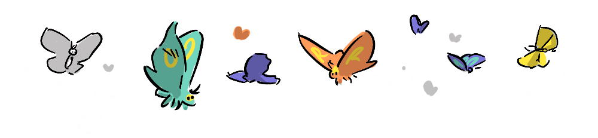

The following post is about an important relationship in my life. It deals with my own experience with charitable giving and I feel a little uncomfortable about this. But I believe it’s important to share meaningful experiences. Giving What We Can suggests that stories about giving can open up possibilities for others to do the same.
I’ve been rewatching “The Good Place” with my daughter recently and have been reminded of T.M Scanlon’s contractualist question, quoted by the fictional professor of ethics Chidi Anagonye.
What do we owe to each other?
Contractualism suggests that our actions must be justifiable to others—that morality is about what no one could reasonably reject . It’s not about charity or self-betterment. It’s about fairness. That idea resonated with me long before I heard it on television or learned what philosophical school of thought it belonged to. Considering that question has led to some of the most meaningful experiences of my life. This is not a post about Contractualism, it’s a post about my…
When I stepped off the bus I walked towards him, he was seated on a bench under a downlight, which was being circled by moths and mosquitos in the rustic outdoor lobby area of our motel. He was chatting jovially with one of our tour party who had stayed behind for the day while we’d been out trekking. He looked up, and screamed in a broad husky tone that I knew.
“Aaaaaaaaaaaaagh! Jemsi!”
He ran at me, launching himself into my torso, almost tackling me to the ground and hugging tight around my belly
After 18 years, I had forgotten how small he was physically, a fact belied by such a big heart, and an even bigger smile. We did that thing where we grabbed each other’s shoulders and held one another at arms length astonished to each be seeing our rafiki again after so long, after many conversations online, after walking together through struggles, struggles which he has borne an unequal share of the weight.
Saidi carves wood, and is carved out of wood. Chiseled features, ripped bod, he is the picture of hard work, at the time he had traveled 10 hours by bus to Arusha for a job with a hotel developer carving ornate traditional doorways that would welcome wazungu —wealthy foreign tourists—visiting his country. His wife, Pili, is sick with a crippling throat infection, and is wasting away but he has made the choice to maintain this working relationship, and make what money he can to support his wife’s need for medicine and hospital visits, rather than staying with her in what could be her final days—it has gotten that bad.

I first met Saidi in 2007 while volunteering for 3 months in the small coastal town of Bagamoyo, helping street kids at his youth program learn english and art skills (an early attempt of mine at answering Scanlon’s question). Bagamoyo is famous for its art and music, and catering to tourists with entertainment and souvenirs is an almost viable path for the young and uneducated. He and his wife were raising a young family at the time, two girls, Esma and, the youngest, Shani. They would run through the dusty grounds in their pristine white and navy blue school uniforms, being delightful. Pili worked in a shopfront making vibrant patterned clothing, Saidi, in the yard, making and selling sculptures and training his young wards to become teachers, who could in turn pay his generosity forward.
We kept in touch after I left, and a few years later he lost the support of the volunteer program I had been a part of. He began to find it difficult to make ends meet, but Saidi is ambitious and as mentioned hard-working, he tried many angles, a comic book he hoped would take off, selling sculptures locally, he and Pili made it through some lean years.

Meanwhile, on the other side of the world my career moved forward, and things got easier and easier (I am grateful I have a job I love and I appreciate that, even in the west, career progress is not a given).
I helped him out a couple of times, but nothing much. Then a few of years ago he told me Shani had been accepted to medical school in Dodoma, and had started training to become a doctor, but it was clear that they were already struggling with costs, and this incredible opportunity and the effort his daughter had put in would be for nought if they could not continue covering her fees and accomodation. So, I spoke with my wife and we agreed that we were now in a position to provide some ongoing assistance to help Shani reach her goal—this was going to be an expense, but a fraction of what it will be for our own child when she reaches University.
And why should Saidi’s daughter not have the same opportunities as mine?
The night of our reunion in Arusha, earlier this year, Saidi and I had some dinner, watched an acrobatics show, and spent a couple of hours sitting at the bar talking about family, politics, our hopes for the future and laughing lots. Saidi worried out loud about Pili’s health, and wished he could be home, but we were both glad to have lucked upon being at the same place at the same time. I was filming two youth rugby teams who were touring Arusha just by a stroke of luck in the same two week period that Saidi was working there. Saidi showed me pictures of Shani at Medical School, and we talked about what was needed to help Pili get better.

Over the past months Pili’s health got a lot worse before it got better. But she is recovering now, and with Saidi’s first big pay cheque on a new job—more doors for a posh residence—he has bought Pili three new sewing machines, so she can get back to work and also train their eldest daughter Esma and another trainee to produce Pili’s signature clothing.
Shani will graduate this year, and begin doing paid placements. She’s a good student, and there’s a lot of demand for doctors, so she will find work.
And over the last year Saidi has built up a portfolio of very fancy doors that themselves act as advertisements for his artistry and skill, so it seems as though he’s found an angle that’s sustainable, while allowing him to continue expressing his creative talents.

Saidi, Pili, Shani and Esma now all have a way for their hard work to pay off, and I am excited to see where they get to. I would say I’m proud of this fact, but it’s not the pride of having contributed, but rather the pride in my friend succeeding, and getting the reward he deserves for his resilience, and the constant efforts of his family. I know also that because of his own generosity, any help I have given him will be passed on by him to his community.
We don’t live in a world where people naturally get what they deserve, or where our rewards are commensurate with our efforts. Extreme poverty makes hurdles in life, like a break in work, an illness or a pregnancy, into a show-stopper, and it robs otherwise motivated people of their potential. Extreme poverty is not visited on the wicked as some divine punishment, it is merely a roll of the dice.
I appreciate every day that I could have been born in Saidi’s shoes, and I would be proud to have worked as hard as he has, been as generous as he has, and to have raised, and struggled to support, a beautiful family as he has.
What do we owe each other? I think we owe each other a fair deal—because life isn’t fair, but we can endeavour to make it more so. Many people don’t have the opportunity to travel and make a personal connection, like I’ve been lucky to with Saidi—but aid work around the world helps millions of people get through difficult moments in their life, so that they can reach a point where they can continue under their own steam. As mentioned in the opening, Giving What We Can is a great place to start.